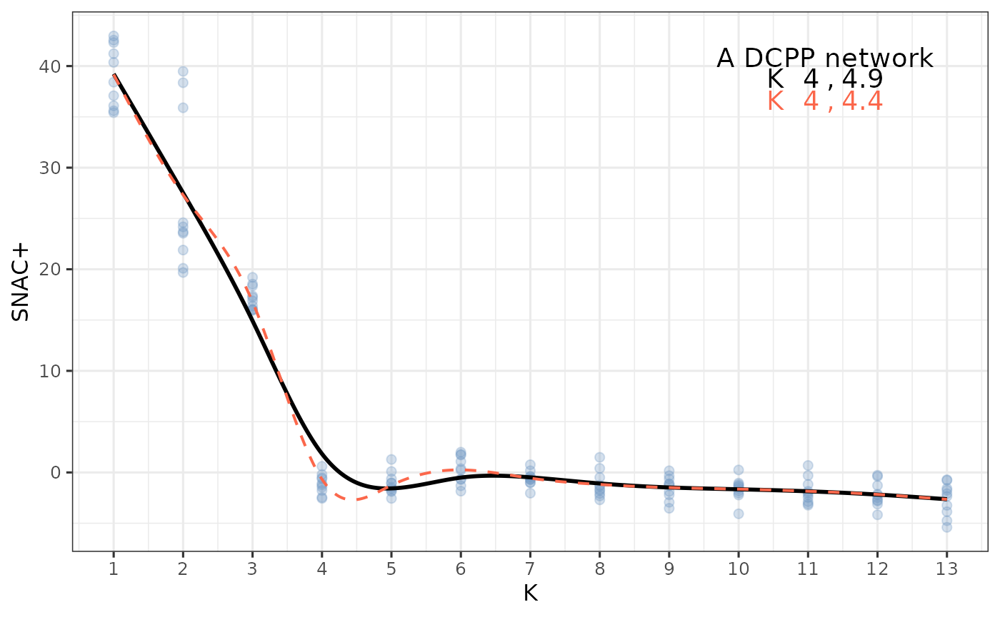

explore-community.RmdLet us create a simple degree-corrected planted parition (DCPP) model:
set.seed(1) n = 1000 # the number of nodes Ktru = 4 # the number of true communties lambda = 15 # the average degree oir = 0.1 # the out-in ratio pri = rep(1,Ktru)/Ktru theta <- EnvStats::rpareto(n, 2/3, 3) # node conn. propensity parameter B = pp_conn(n, oir, lambda, pri, theta)$B # create connectivity matrix z = sample(Ktru, n, replace=T, prob=pri) # sample node labels A = sample_dcsbm(z, B, theta) # sample the adjacency matrix
Check to see if the expected average degree matches the target
Compute and plot the community profile based on SNAC+ test statistic
tstat = snac_resample(A, nrep = 10, ncores = 3) plot_smooth_profile(tstat, "Simpe DCPP network", trunc_type = "none", spar=0.3, plot_null_spar = T)
